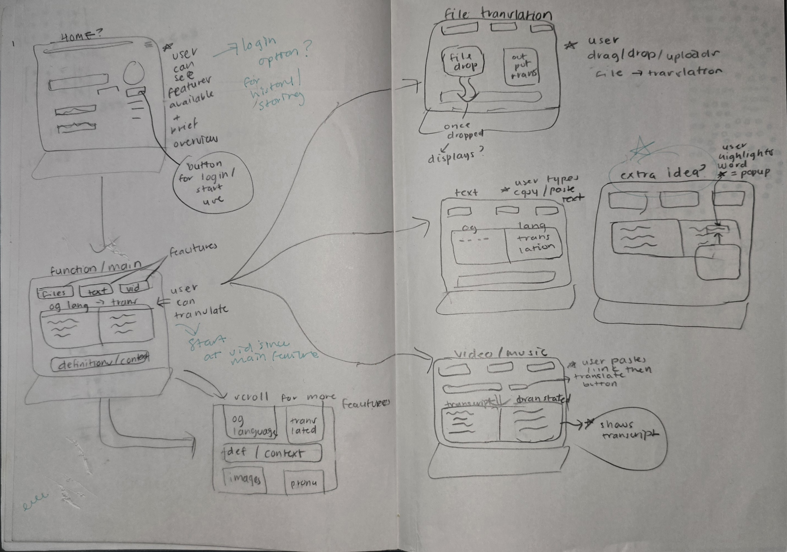
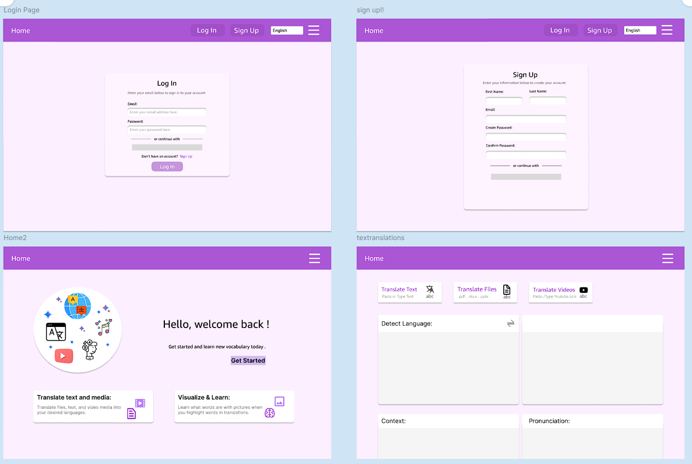
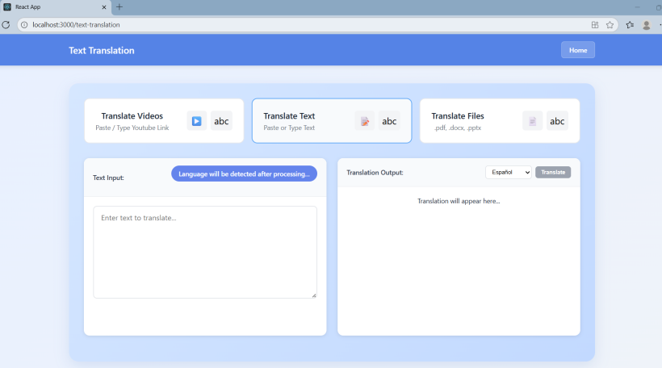
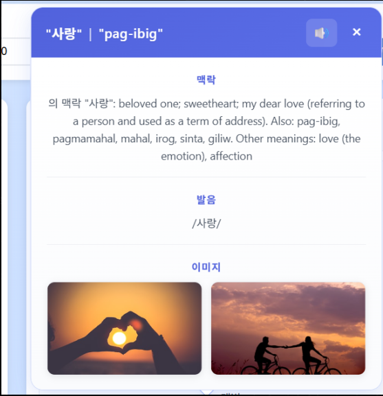

I think most people have this shared universal experience of wanting to learn a new language someday. Somewhere along the way though, I noticed a pattern: using translations tools always gave me direct translations, yet they rarely returned what I truly wanted to say or learn. It turns out language doesn't work like a dictionary. The same word can mean something different depending on the setting, the tone, or the part of the world you're in. That frustration is what pushed our team to build a web app that translates, but also shows you how a word or phrase is really used, with its context, pronunciation, and cultural nuance.
As the one who proposed the project idea, I naturally led the initial design process. I was the only one in my team who had taken a UI/ UX class, so I was dealing with strictly technical people. I pulled out a sheet of paper, pencil, some colored pens, and got to work by creating a user flow chart to break it down for the team. I communicated what features I thought we should include in the app, and mapped out how the user would go from simply entering a text to understanding a translation. As they were getting the hang of it, they also suggested features like a user database and the word pop-up. From there, I built a low-fidelity Figma draft to align the team before any code was written.

When presenting the original design in the first meeting, it wasn't approved and received little to no feedback from our advisor. My teammates were also unable to give any insight due to this being their first project with design. Rather than guess at what to fix, I reached out to a UI/UX professor I'd taken a course with the year before. She pointed me toward the 10 Usability Heuristics as a framework for evaluating the design, and suggested getting feedback from classmates outside our project team — people who'd use the app with fresh eyes, not ones already familiar with our goals.
I gathered that feedback, ran it against the heuristics, and used both to revise the design before moving into implementation.

Our Figma drafts included login and sign-up screens, but we were directed to prioritize the translation features themselves over building out a database — so the final build skipped user accounts entirely and put all our time into the core translation experience instead.
Most of the app came together smoothly — the file, text, and media translation pages shared a similar structure, so once one was built, the others followed quickly. The hardest part by far was the word-definition popup: a small UI element responsible for surfacing context, pronunciation, and a relevant image the moment a user tapped on a translated word.

The popup needed data from three different sources (a definition/context API, a pronunciation source, and Unsplash for imagery), and early versions loaded them all at once. This caused two problems: the layout would jump around as pieces loaded out of order, and — more confusingly — the image API was sometimes called twice, returning two different images for the same word.
Working with a teammate, I restructured the load sequence so the popup would:
This fixed both the visual jumpiness and the duplicate-image bug, and it taught me something that stuck: a bug that looks technical (an API firing twice) is often a sequencing/UX problem in disguise — the fix wasn't "call the API less," it was "don't ask for the image until we actually know what the word means in context."

Once the core features were built, I asked classmates to test the app, specifically checking whether any part of the experience violated the Usability Heuristics we'd designed around — things like visibility of system status, consistency, and error prevention.
Given our timeline, the team made a deliberate call: prioritize getting the translation and context features working and accurate over polishing the visual experience. That was the right call for a semester-long project with a small team, but if I extended this work, the next iteration would focus on:
This was one of the most demanding projects I had ever worked on, not because it couldn't be done, but because it required me to go out of my comfort zone and lead the design process — something I had never done before. The project delivery was successful because the team stayed communicative through check-ins, as well as everyone being open to feedback, like rejection (awkward i know). I learned to communicate with people whose focus is more technical, and I was able to teach them what I had learned, which helped me practice even more. It's also where I first experienced, even at small scale, what agile development actually feels like day to day: constant feedback loops that push both individual work and the team's output forward.